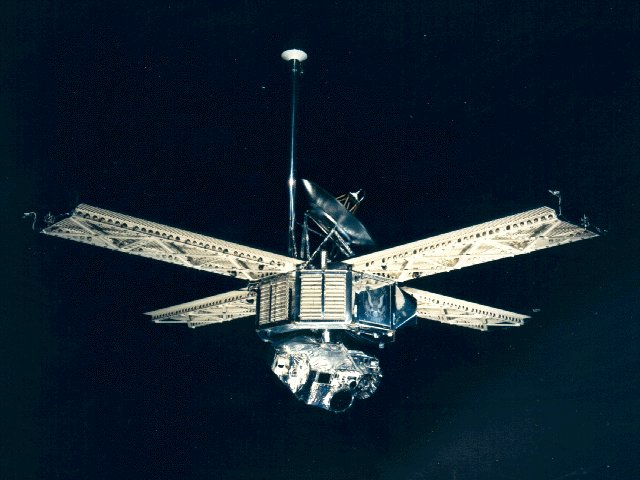
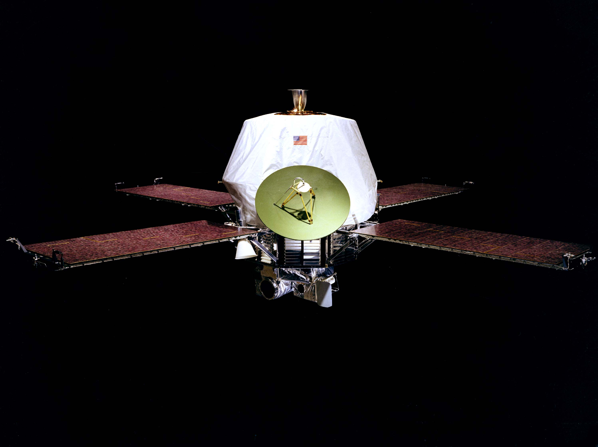

Mars 1M Znana także jako Marsnik 1. Piewsza sonda wysłana w kierunku Marsa przez ZSRR 10 października 1960 roku. Nieudało się jednak jej wystartować. |
 |
Mariner 3 Pierwsza sonda wysłana w kierunku Marsa przez USA 5 listopada 1964 roku w ramach misji Mariner. Wyprawa nie powiodła się, a sonda została na orbicie heliocentrycznej. |
| Mariner 4 Druga sonda wysłana orbitę Marsa przez Amerykanów 28 listopada 1964 roku w ramach misji Mariner. Wyprawa powiodła się, sfotografowano strukturę Czerwonej Planety 21 razy. Zdjęcia nadesłane przez sprzęt bardzo wpłynęły na podejście państw do eksploracji Marsa. Zaczęto podejrzewać, że mogło tam istnieć życie. |
|  | Mariner 6 i 7 Następne sondy amerykańskie, które przeprowadziły poważniejsze badania planety odpowiednio 24 lutego i 28 marca 1969. Udało się zrobić około 200 zdjęć, zmierzyły temperaturę i analizę atmosfery. |
|  | Mariner 9 Przedostatnia sonda amerykańskiego programu Mariner wysłana 30 maja 1971 roku. Jej celem było zostać stałą sztuczną satelitą marsjańską. Dotarła na orbitę 14 listopada 1971 i udało jej się osiąść sukcesywnie. Pierwsze zdjęcia zrobione nie były najlepszej jakości, gdyż na planecie panowała burza piaskowa. Dopiero rok póżniej udało się wykonać dokładniejsze zdjęcia. Mariner przesłał ponad 7000 zdjęć! Nie tylko planety, ale także jej dwóch księżyców. |